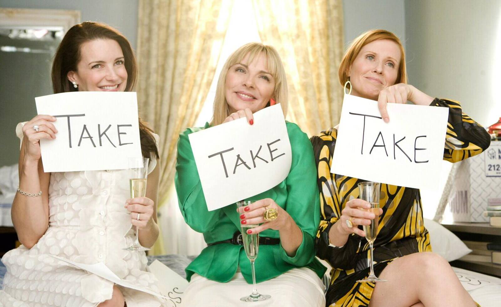

Sex and the City (advertised as Sex and the City: The Movie) is a 2008 American blue romantic comedy film written and directed by Michael Patrick King, and a film adaptation of the HBO comedy series of the same name (itself based on the book of the same name by Candace Bushnell) about four female friends: Carrie Bradshaw (Sarah Jessica Parker), Samantha Jones (Kim Cattrall), Charlotte York Goldenblatt (Kristin Davis), and Miranda Hobbes (Cynthia Nixon), dealing with their lives as single women in New York City. The series often portrayed frank discussions about romance and sexuality.The world premiere took place at Leicester Square, London, on May 15, 2008, and premiered on May 28, 2008, in the United Kingdom and May 30, 2008, in the United States.The film was prominently shot in New York between September–December 2007.The locations included a number of places around Manhattan and a certain portion was shot in Steiner Studios and Silvercup Studios. The shooting was continually interrupted by paparazzi and onlookers with the security and police authorities employed in order to control the crowd.Efforts were taken to keep the film's plot secret, including the shooting of multiple endings.As a defense strategy, scenes shot in public or in presence of number of extras were termed by Ryan Jonathan Healy and the main cast as "dream sequences".Тhe film was a commercial success. Opening in 3,285 theaters, the film made $26.93 million in the US and Canada on its first day. The three-day opening weekend total was $57,038,404, aggregating $17,363 per theater.The film recorded the biggest opening ever for an R-rated comedy and for a romantic comedy, and also for a film starring all women. As of March 2010, the film had grossed $152,647,258 at the US and Canadian box office, and $262,605,528 in other markets, bringing the worldwide total gross revenue to $415,252,786, making it the highest-grossing romantic comedy of 2008.

Plot
Carrie walks through the streets of New York City thinking about events that have happened to her and her friends during Sex and the City. Charlotte is now happily married to Harry Goldenblatt, but she had a hard time getting pregnant - so they adopted a Chinese girl named Lily; Miranda has settled down in Brooklyn with Steve (David Eigenberg) to raise their son Brady together; and Samantha has relocated her business to Los Angeles to be close to Smith (Jason Lewis), who is now a superstar, although she misses her old life and takes every opportunity to fly East to be with Carrie, Miranda and Charlotte.Carrie herself is now in a relationship with Big (Chris Noth), and they are viewing apartments with plans to move in together. Carrie falls in love with a penthouse far from their price range. Big immediately agrees to pay for it. Carrie offers to sell her own apartment, although she also voices her fear that she would have no legal rights to their home in case they separate, as they are not married. To quell her fears, Big suggests that they marry. Carrie announces the news to her friends. Charlotte and Miranda are happy at the news, but Samantha - as Carrie points out dryly - sounds more excited at the thought of Carrie "finally getting Botox". Charlotte suggests her longtime gay friend, Anthony Marantino, as the pushy wedding planner.Miranda confesses to her friends that she has been so busy she hasn’t had sex with Steve in six months. When Steve confesses he has cheated on her, Miranda is devastated and immediately separates from him. At Carrie and Big's rehearsal dinner, Steve tries to reconcile with Miranda, but she rebuffs him. Still upset with Steve, she tells Big bluntly that marriage ruins everything.On the wedding day, (partially due to Miranda's words at the rehearsal dinner) Big is too fearful to go through with the ceremony. Carrie, devastated, flees the wedding. Samantha stays behind to clear the guests. Big changes his mind and catches up with Carrie in an attempt to reconcile in the middle of a one-way street. Carrie furiously attacks him with her bouquet while he earns scathing looks from Miranda and Charlotte, as well as from the crowds of New Yorkers watching the scene unfold. To console Carrie (who is depressed, and at the beginning of the holiday doesn't eat anything for two days), the four women take the honeymoon that Carrie had booked to Mexico, where they de-stress and collect themselves.On the wedding day, (partially due to Miranda's words at the rehearsal dinner) Big is too fearful to go through with the ceremony. Carrie, devastated, flees the wedding. Samantha stays behind to clear the guests. Big changes his mind and catches up with Carrie in an attempt to reconcile in the middle of a one-way street. Carrie furiously attacks him with her bouquet while he earns scathing looks from Miranda and Charlotte, as well as from the crowds of New Yorkers watching the scene unfold. To console Carrie (who is depressed, and at the beginning of the holiday doesn't eat anything for two days), the four women take the honeymoon that Carrie had booked to Mexico, where they de-stress and collect themselves.Charlotte learns she is pregnant, and for most of her pregnancy is fearful that something might happen to her baby, so she stops her regular running around Central Park. Carrie puts her fear to rest by telling her that, since she already soiled herself in Mexico, her bad luck is finished. Later, Charlotte has a surprise encounter with Big that leaves her so outraged that her water breaks. Big takes her to the hospital and waits until baby Rose is born, hoping to see Carrie. Harry passes on the message that Big would like her to call him, and that he has written to her frequently, but never received a reply.